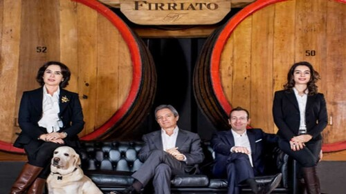
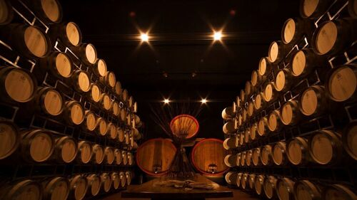
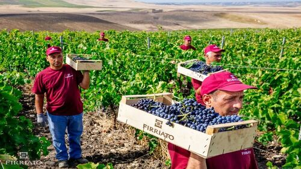
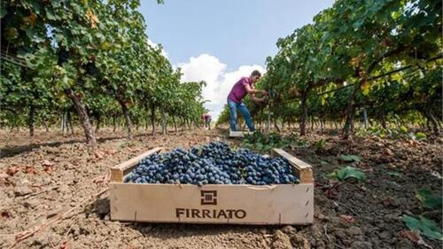
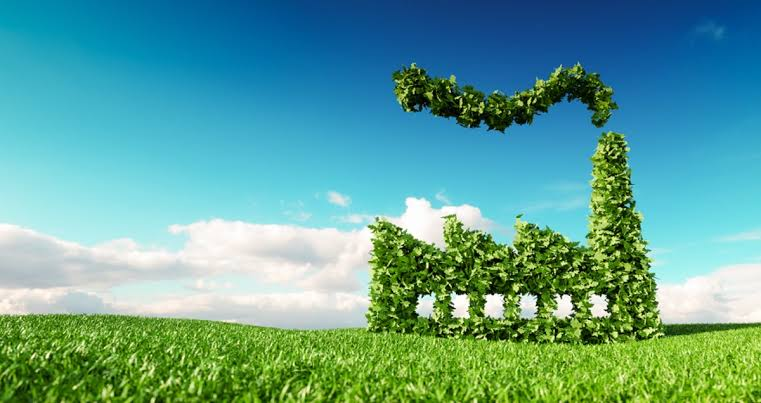
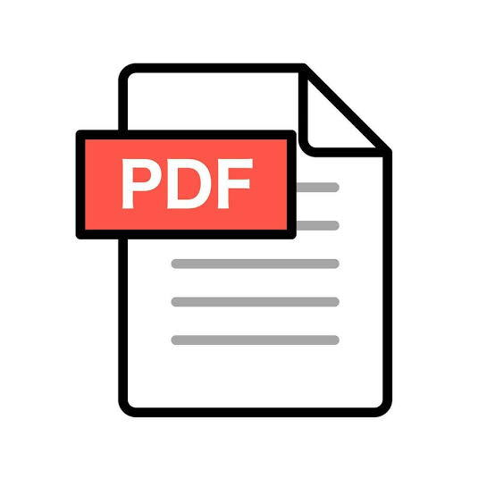

Costruiamo il futuro, custodiamo la Sicilia
Scopri l'impegno che mettiamo per un FUTURO più sostenibile, trasparente e responsabile
Chi Siamo
LE ORIGINI

L'AZIENDA

IL TEAM

PRODUZIONE

Punti Di Forza
Sostenibilità Ambientale
100% Biologico e Impronta Zero
Coltiviamo circa 470 ettari di vigneti senza pesticidi o concimi chimici di sintesi. Ci impegniamo a rimanere un'azienda Carbon Neutral, riducendo e compensando le emissioni di CO2 per proteggere il clima e il territorio.
Responsabilità Sociale
Legame con il Territorio e Lavoro Etico
Valorizziamo la comunità siciliana impiegando maestranze locali e promuovendo la cultura del vino sostenibile. Recuperiamo gli antichi bagli e i vigneti storici per preservare la memoria dell'isola.
Innovazione e Ricerca
Agricoltura di Precisione e Biodiversità
Applichiamo tecnologie avanzate per monitorare ogni singola vite e ridurre gli sprechi idrici. Salvaguardiamo la biodiversità nei nostri diversi terroir, dalle terre vulcaniche dell'Etna al mare di Favignana.
Qualità e Tracciabilità
Dalla Terra alla Bottiglia
Garantiamo la totale tracciabilità della filiera grazie alla certificazione ISO 22005. Offriamo vini biologici d'eccellenza, puri e autentici, nel pieno rispetto dei ritmi naturali della terra.
Sostenibilità

Pilastro Ambientale
Meno impatto, più natura
- Vigneto 100% biologico su 470 ettari di terreno
- Consumo energetico di 0,35 kWh per litro di vino
- Consumo d'acqua per litro di vino ridotto dell'87% dal 2019 al 2024
- Impianto Fotovoltaico da 432,73 kWp
- Recupero di vitigni autoctoni storici e la protezione dei biotipi unici dell'Etna e di Favignana.
Certificazioni: ISO 9001:2015, ISO 14001:2015, Biologica Reg. UE 2018/848, IFS FOOD, Standard Equalitas, UNI ISO 22005, BRCGS Food Safety
Pilastro Sociale
Tuteliamo le persone e il territorio
- Sicurezza sul lavoro a norma di legge secondo le norme attualmente in vigore
- Parità salariale e nessuna discriminazione
- Promozione della cultura locale attraverso il sostegno a eventi come "Visioni Verticali", "Calici di Stelle"
- Piano annuale di formazione per i dipendenti su sicurezza e sostenibilità
- Coinvolgimento sostenibile della filiera e dei fornitori
- Dialogo e trasparenza con tutti gli stakeholder
Obiettivi Di Sostenibilità
Il nostro impegno per il futuro
- Riduzione costante dei consumi idrici ed energetici con costruzione di nuovi depuratori
- Impegno per la riduzione delle emissioni di CO2 per il mantenimento e ottimizzazione dello status di prima cantina italiana certificata a emissioni zero (Carbon Neutral dall'ente DNV GL)
- Ampliamento dei boschi aziendali e dei progetti di riforestazione.
- Evoluzione dei sistemi IoT per il monitoraggio dello stress idrico della pianta
- Arrivare al riciclo e riutilizzo totale degli scarti di produzione in ottica di economia circolare a rifiuto zero.
- Transizione verso un packaging totalmente ecocompatibile,riducendo peso delle bottiglie e utilizzando esclusivamente cartoni riciclati e sugheri certificati a impronta zero
- Estendere la rendicontazione dei dati di sostenibilità direttamente al consumatore finale.

Vuoi conoscere tutti i dati e gli obiettivi del nostro percorso di sostenibilità nel dettaglio?
Scarica il Report di Sostenibilità 2024